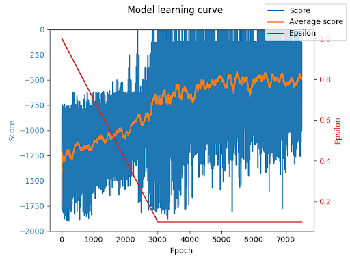

This project assesses the ability of a deep reinforcement learning neural network to build proficiency in Gymnasium’s swinging pendulum environment. A reinforcement learning algorithm uses past experiences to build an association between the environment’s current state and the next state given a certain action. Through training, the model improves score estimates, or Q values, for each potential action A in a state S, and learns which actions return the highest scores. Gymnasium is a common library used in AI applications that provides prebuilt environments that the AI model can interact with. According to the paper Human-level control through deep reinforcement learning and the online course Modern Reinforcement Learning: Deep Q Agents, I have constructed a deep Q learning agent that uses a memory buffer and two separate deep networks.
My project consists of several Python files as outlined in Table 1 below. When the pendulum_deep.py file is run, the deep Q agent begins training automatically until n_games have been played. The code will continuously print output including the current score, epsilon, and game/epoch number. The program saves plotted visualizations in the plots/ folder and the neural network weights in the models/ folder. The average score of the model more than doubles throughout training from a value of about -1300 to -500 (the highest possible score is 0). The best network models are saved as models/best_eval and models/best_next, respectively.
After validating the function of the code, I began to test different hyperparameters and found that 32 neurons in the hidden layer with an epsilon decrement rate of 1.5e-6 leads to the highest observed average score of about -500 points. This test demonstrated an extremely clear increase in capability as epsilon decremented to 0.1. I am extremely pleased with the results. I was at first disappointed that the training seemed to level off around an average of -500 points, but visualizing the performance after training revealed that the model is actually highly performant. The low scores and seemingly noisy graph output is the result of the environment’s inherent stochasticity; when the pendulum starts at the absolute lowest position and with zero angular momentum, the model accumulates a large negative score as it swings the pendulum back and forth until it has enough momentum to move to the upright position. There is no torque output in the environment’s action space that is large enough to accomplish this in one swing, thus some of the scores drop as low as -1700 points.
